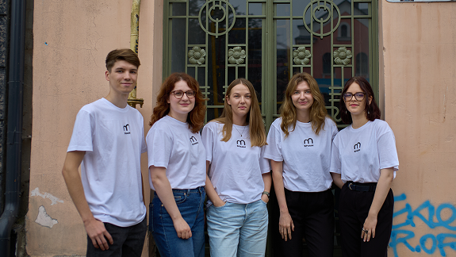
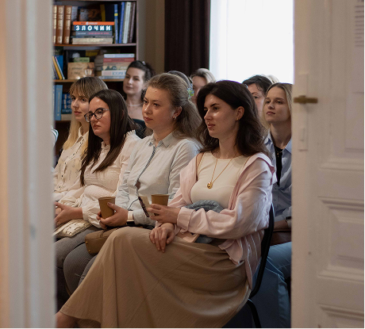
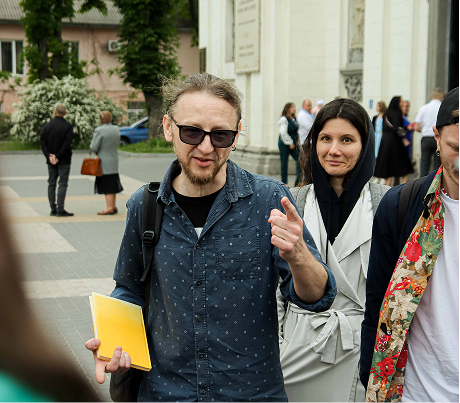
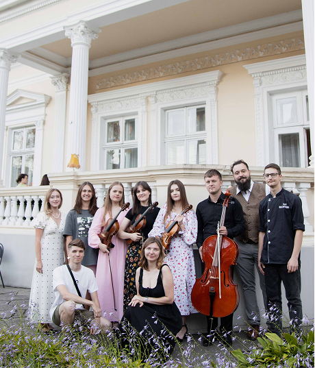
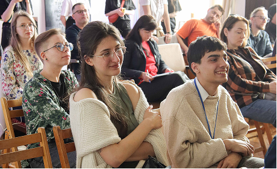
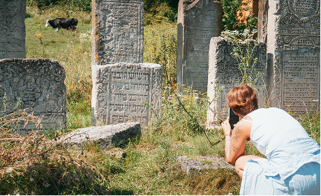
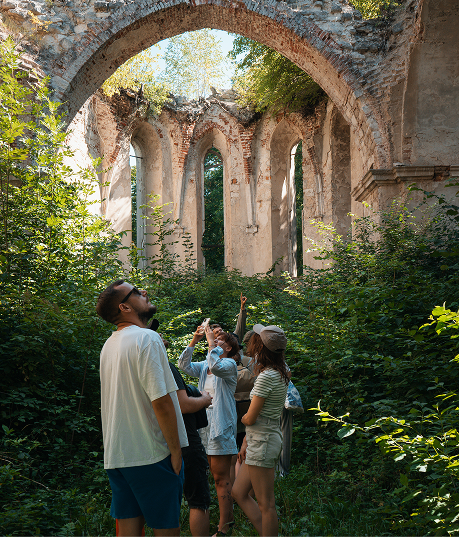

Ми зберігаємо архітектурну спадщину Тернопільщини через освіту, дії громади та любов до краю.
Долучайся до змінМи - ініціатива, створена у 2022 році небайдужими мешканцями Тернополя у відповідь на хаотичну забудову та руйнування архітектури. Наша команда з 10 фахівців об’єднує досвід у сферах архітектури, культури, права та реставрації. За два роки ми провели понад 20 подій і спільно врятували кілька історичних об'єктів. Наша головна мета - підняти свідомість громади та показати: спадщина - важлива складова нації.

Слідкуйте за нами у
Instagram:
архітектурні відкриття,
бекстейдж реставрацій, історії та анонси подій.
Ми вже втілили низку проєктів, які демонструють, що спільна турбота про спадщину це можливо
Якщо ви мешкаєте в будинку з історією - ми можемо допомогти. Заповніть форму, і ми зв’яжемося з вами.
Заповнити формуМи проводимо публічні освітні події, лекції, воркшопи та екскурсії. А також проводимо події для корпоративних клієнтів






Це візуальне продовження наших цінностей. Лімітована серія одягу та сувенірів, розроблена з увагою до деталей.
Ми створили інтерактивну мапу старих брам Тернополя, як пам’ять про архітектуру та важливість дії. Перегляньте, та долучіться до їхнього збереження.
Сецесійна брама початку XX століття, відреставрована завдяки ГО «Брами Тернополя» у 2024 році.
Вітраж: Ліля Василько
Фото: Захар Дябло , Анна Золотнюк